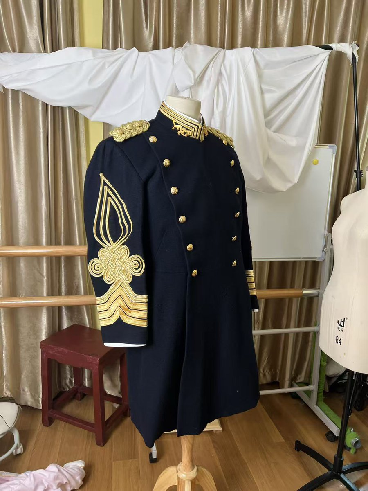

蘑菇盆栽🍄
@loveforeversfy
@Goldwater8964 东baby

Friedrich🇳🇿🇦🇺
@Goldwater8964
这只是一个自我介绍
00后，男的，没有精神病，UNSW学生，我真的好想去LSE读硕士😭
欢迎国服和国际服湾岸打我化身，也欢迎随时随地找我打战雷，我开了日本和以色列的地面载具线
我是烟民，加热烟电子烟传统香烟我都抽，但我从来不od嗑药，如果你讨厌烟民可以不关注我
如果你想见我我会给你播放是大臣
🤣 https://t.co/PLZ53NaSro